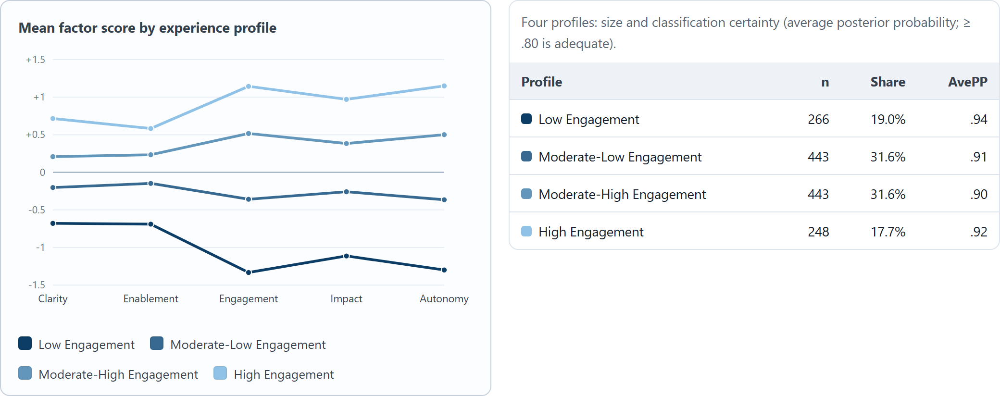
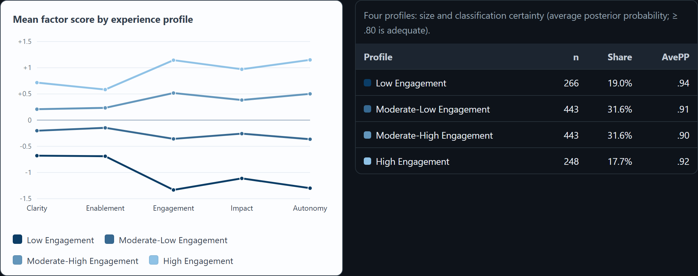

What I do
- Measurement & survey science Instrument design and validation, scale development, Rasch/IRT, reliability & validity.
- Statistical modeling Multilevel/mixed-effects models, quasi-experimental design, latent profile / person-centered analysis.
- Analytics engineering & automation R (advanced, incl. a custom package for automated psychometric pipelines), reproducible pipelines, dashboards, RAG/LLM prototyping.
- Communication Turning technical findings into decisions for non-technical stakeholders and leadership.
Featured work
Latent Profile Explorer


Method. Latent profile analysis finds kinds of people rather than differences between groups defined in advance — here it recovers four distinct experience profiles from a synthetic employee-experience survey and shows what it costs to choose three or five instead.
So what. It surfaces the segment having the worst experience even when those people are spread evenly across department, tenure, and level — the cuts a standard HR dashboard already shows.
Illustrative demo. Built on synthetic data I generated to mirror an employee-listening use case; the analytic approach (latent profile analysis, segment profiling) reflects methods I use in my real research. No proprietary or real employee data.
Selected projects
About
I've spent 8 years at a science-education research nonprofit doing measurement, evaluation, and analytics — designing and validating instruments, modeling human data, and turning the results into decisions for the people who act on them. I also co-lead our internal AI task force, building RAG/LLM tools for the team.
Lately going deep on LLM/RAG systems for assessment and scaling analytics workflows.
Selected publications
- Donovan, B. M., Weindling, M., Amemiya, J., Salazar, B., Lee, D., Syed, A., Stuhlsatz, M. A., & Snowden, J. (2024). Humane genomics education can reduce racism. Science, 383(6685), 818–822. https://doi.org/10.1126/science.adi7895
- Herrmann-Abell, C. F., Stuhlsatz, M. A., Wilson, C. D., Snowden, J., & Donovan, B. M. (2023). Using Rasch Measurement to Develop Model-Based Reasoning Assessment Tasks. In Advances in Applications of Rasch Measurement in Science Education (pp. 241–264). Cham: Springer International Publishing. https://doi.org/10.1007/978-3-031-28776-3_10
- Schultheis, E. H., Kjelvik, M. K., Snowden, J., Mead, L., & Stuhlsatz, M. A. (2023). Effects of data nuggets on student interest in STEM careers, self-efficacy in data tasks, and ability to construct scientific explanations. International Journal of Science and Mathematics Education, 21(4), 1339–1362. https://doi.org/10.1007/s10763-022-10295-1